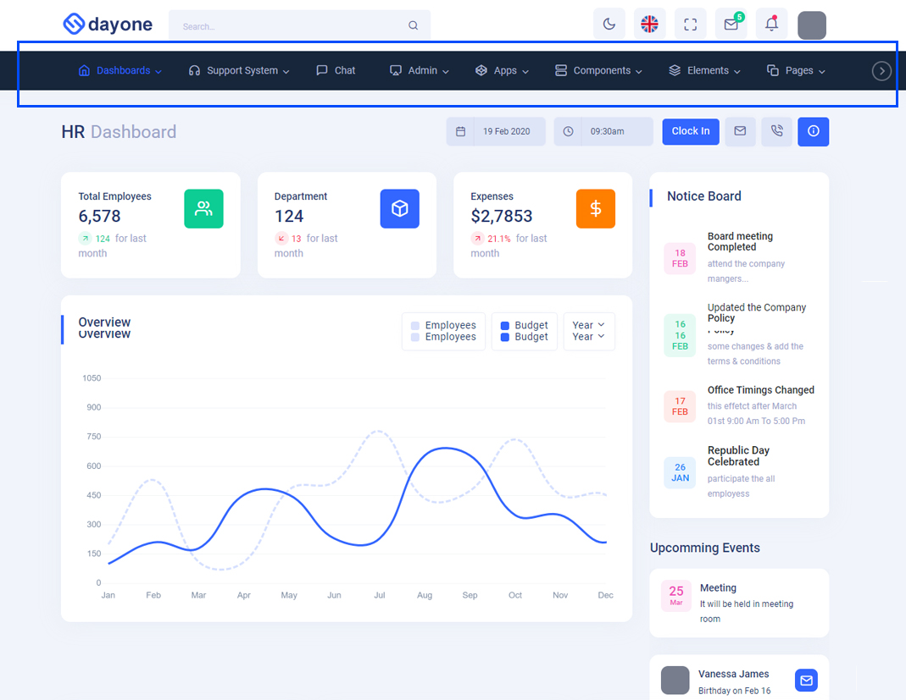
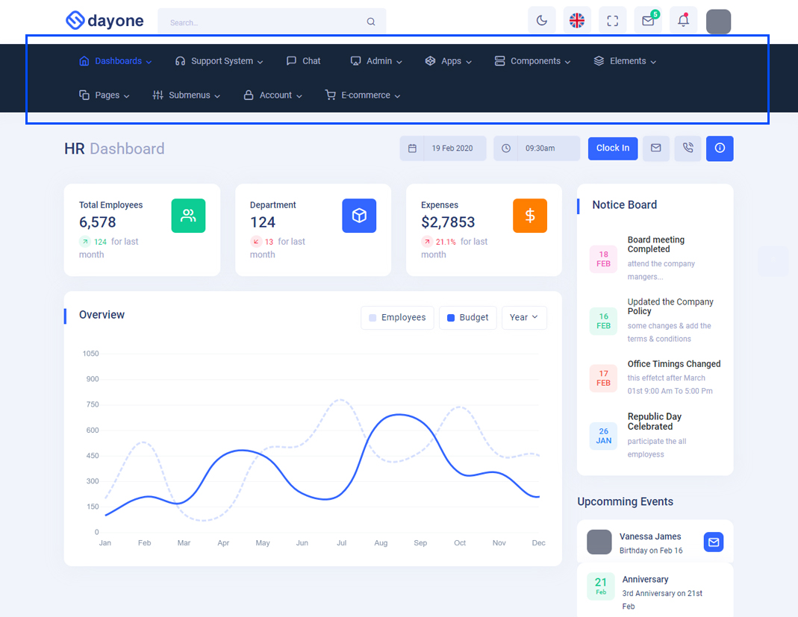

FAQS
1.General Style
How to Change Font Style ?
Step 1:
Go To _fonts.scss (assets/scss/custom/fonts/_fonts.scss )
if you want to change another font-family Go to the site Google Fonts And Slect One font Family and import In to style.css file
How to Select font Family
Example:

Step 2:
And paste Your Selected font-family in _fonts.scss
Example:
@import url('https://fonts.googleapis.com/css2?family=Maven+Pro:wght@400;500;600;700;800&display=swap');
Step 3:
And add the Your Selected font-family in _bootstrap-styles.scss(assets/scss/bootstrap/_bootstrap-styles.scss)
Example:
body {
margin: 0;
font-family: 'Roboto', sans-serif;
font-size: 14px;
font-weight: 400;
line-height: 1.5;
color: #263871;
text-align: left;
background: #f1f4fb;
min-height: 100vh;
flex-direction: column;
justify-content: flex-start;
position: relative;
overflow-y: scroll;
}
How to Change Logo ?
Go To "assets/images/brand" folder and replace your logo with Previous Logos within in image size. note: Please don't increase logo sizes. Replace your logo within given image size. otherwise the logo will not fit in particular place it disturbs the template design.
How to change Menu icons ?
By default menu icons are feather icons if you want to change icons please follow below steps
Step 1 :
To change Menu icons, open html page and go through app-sidebar
section, in that section you will find feather icons of menu in i
tag, there you can replace previous icon with your icon. Example as shown in below
How to change Date format ?
By default Date format is dd/mm/yyy if you want to change format please follow below steps
Step 1 :
To change Date format open form-elements.js (rootpath:-assets/js/form-elements.js) and go through Date picker
section, in that section you will find #datepicker-date id of date picker js
in that id you will find format: "dd-mm-yyyy"Now you can change your format. Example as given bellow for year/month/date(yyyy/mm/dd).
Before:
$('#datepicker-date').bootstrapdatepicker({
format: "dd-mm-yyyy", //Before
viewMode: "date",
multidate: true,
multidateSeparator: "-",
})
After:
$('#datepicker-date').bootstrapdatepicker({
format: "yyyy-mm-dd", //After
viewMode: "date",
multidate: true,
multidateSeparator: "-",
})
2.Navigation Style
How to Enable Horizontal Click Menu?
Please follow the below steps to enable Horizontal Click Menu Style
Step 1 :
To enable Horizontal Click Menu Style you have to open
custom.js
(assets/js/custom.js) file and remove comments for
horizontal as shown in below
// ***** Horizontal Click Menu ***** //
// $('body').addClass('horizontal');
Step 2 :
Remove the comments to enablehorizontal as
shown below
// ***** Horizontal Click Menu ***** //
$('body').addClass('horizontal');
How to Enable Horizontal Hover Menu?
Please follow the below steps to enable Horizontal Hover Menu Style
Step 1 :
To enable Horizontal Hover Menu Style you have to open
custom.js
(assets/js/custom.js) file and remove comments for
horizontal-hover as shown in below
// ***** Horizontal Hover Menu ***** //
// $('body').addClass('horizontal-hover');
Step 2 :
Remove the comments to enablehorizontal-hover as shown below
// ***** Horizontal Hover Menu ***** //
$('body').addClass('horizontal-hover');
How to Enable Horizontal or Horizontal Hover layout With Wrap Style
noWrap style:
open custom.js assets/js/custom.js
file and you will find below js in
Horizontal (or) Horizontal Hover layout to enable wrap
style for Horizontal or Horizontal Hover
noWrap style is given as default horizontal menu style,if you want to change it to wrap style please follow below process.
$('#slide-left').addClass('d-none');
$('#slide-right').addClass('d-none');
// $('#slide-left').removeClass('d-none');
// $('#slide-right').removeClass('d-none');
if (document.querySelector('.horizontal').firstElementChild.classList.contains('login-img') !== true) {
document.querySelector('.horizontal .side-menu').style.flexWrap = 'nowrap'
Related Image:

wrap style:
ReplacenoWrap with wrap as
shown below and remove comments for $('#slide-left').addClass('d-none'); & $('#slide-right').addClass('d-none');
and add comments to $('#slide-left').removeClass('d-none'); & $('#slide-right').removeClass('d-none'); as shown below.
//$('#slide-left').addClass('d-none');
//$('#slide-right').addClass('d-none');
$('#slide-left').removeClass('d-none');
$('#slide-right').removeClass('d-none');
if (document.querySelector('.horizontal').firstElementChild.classList.contains('login-img') !== true) {
document.querySelector('.horizontal .side-menu').style.flexWrap = 'wrap'
Related Image:

3.How to Enable RTL Version
How to Enable RTL version?
open custom.js file and remove comments for RTL version to enable RTL version style as shown in below
/*RTL Layout Style*/
// $('body').addClass('rtl');
/*RTL Layout Style End*/
rtl as shown below
/*RTL Layout Style*/
$('body').addClass('rtl');
/*RTL Layout Style End*/
4.Theme Styles
How to Enable Darktheme?
open custom.js file go to SWITCHER-toggle and remove comments for dark-mode to enable dark-mode style as shown in below
/*Theme Layouts*/
//$('body').addClass('dark-mode');
dark-mode as shown below
/*Theme Layouts*/
$('body').addClass('dark-mode');
How to Enable Transparent Theme?
Please follow the below steps to enable Transparent Theme
Step 1 :
To enable Transparent Theme you have to open custom.js
(assets/js/custom.js) file
and remove comments for transparent-mode as shown in below
/******* Theme Style ********/
//$('body').addClass('transparent-mode');
Step 2 :
Remove the comments to enabletransparent-mode as shown below
/******* Theme Style ********/
$('body').addClass('transparent-mode');
5.Header Styles
How to Enable Color-header?
open custom.js file go to Header Styles. and remove comments for color-header to enable color-header style as shown in below
/*Header Styles*/
//$('body').addClass('color-header')
color-header as shown below
/*Header Styles*/
$('body').addClass('color-header')
How to Enable Dark-header?
open custom.js file go to Header Styles. and remove comments for dark-header to enable dark-header style as shown in below
/*Header Styles*/
//$('body').addClass('dark-header');
dark-header as shown below
/*Header Styles*/
$('body').addClass('dark-header');
How to Enable Light-header?
open custom.js file go to Header Styles. and remove comments for light-header to enable light-header style as shown in below
/*Header Styles*/
//$('body').addClass('light-header');
light-header as shown below
/*Header Styles*/
$('body').addClass('light-header');
How to Enable Gradient-header?
open custom.js file go to Header Styles. and remove comments for gradient-header to enable gradient-header style as shown in below
/*Header Styles*/
//$('body').addClass('gradient-header');
gradient-header as shown below
/*Header Styles*/
$('body').addClass('gradient-header');
6.Menu Styles
How to Enable Menu light?
open custom.js file go to Left-menu Styles. and remove comments for light-menu to enable light-menu style as shown in below
/*Left-menu Styles*/
//$('body').addClass('light-menu');
light-menu as shown below
/*Left-menu Styles*/
$('body').addClass('light-menu');
How to Enable Menu Color?
open custom.js file go to Left-menu Styles. and remove comments for color-menu to enable color-menu style as shown in below
/*Left-menu Styles*/
//$('body').addClass('color-menu');
color-menu as shown below
/*Left-menu Styles*/
$('body').addClass('color-menu');
How to Enable Menu Dark?
open custom.jsfile go to Leftmenu Style. and remove comments for dark-menu to enable dark-menu style as shown in below
/*Leftmenu Styles*/
//$('body').addClass('dark-menu');
dark-menu as shown below
/*Leftmenu Styles*/
$('body').addClass('dark-menu');
How to Enable Menu Gradient?
open custom.jsfile go to Leftmenu Style. and remove comments for gradient-menu to enable gradient-menu style as shown in below
/*Leftmenu Styles*/
//$('body').addClass('gradient-menu');
gradient-menu as shown below
/*Leftmenu Styles*/
$('body').addClass('gradient-menu');
7.Layout-width
How to Enable boxed layout?
open custom.jsfile go to Boxed Layout. and remove comments for boxed to enable Boxed Layout as shown in below
/*Boxed Layout Start*/
// $('body').addClass('boxed');
Boxed Layout as shown below
/*Leftmenu Styles*/
$('body').addClass('boxed');
8.Side-menu Layout Styles
How to Enable closed-menu?
open custom.js file and remove comments for Closed Sidemenu to enable closed menu style as shown in below
// ***** closed menu *****//
// $('body').addClass('closed');
// $('body').addClass('sidenav-toggled');
Closed Sidemenu as shown below
// ***** closed menu *****//
$('body').addClass('closed');
$('body').addClass('sidenav-toggled');
How to Enable Hover-submenu?
open custom.js file and remove comments for Hover-submenu to enable Hover-submenu-style style as shown in below
// ***** Hover submenu *****//
// $('body').addClass('hover-submenu');
// $('body').addClass('sidenav-toggled');
// if(document.querySelector('.hover-submenu').firstElementChild.classList.contains('responsive-log') !== true){
// hovermenu();
// }
hover-submenu as shown below
// ***** Hover submenu *****//
$('body').addClass('hover-submenu');
$('body').addClass('sidenav-toggled');
if(document.querySelector('.hover-submenu').firstElementChild.classList.contains('responsive-log') !== true){
hovermenu();
}
How to Enable Hover-submenu-style1?
open custom.js file and remove comments for Hover-submenu1 to enable Hover-submenu-style1 style as shown in below
// ***** Hover submenu1 *****//
// $('body').addClass('hover-submenu1');
// $('body').addClass('sidenav-toggled');
// if(document.querySelector('.hover-submenu1').firstElementChild.classList.contains('responsive-log') !== true){
// hovermenu();
// }
hover-submenu1 as shown below
// ***** Hover submenu1 *****//
$('body').addClass('hover-submenu1');
$('body').addClass('sidenav-toggled');
if(document.querySelector('.hover-submenu1').firstElementChild.classList.contains('responsive-log') !== true){
hovermenu();
}
How to Enable Icon-overlay?
open custom.js file and remove comments for Icon-overlay to enable Icon-overlay style as shown in below
// ***** Icon-overlay *****//
// $('body').addClass('icon-overlay');
// $('body').addClass('sidenav-toggled');
Icon-overlay as shown below
// ***** Icon-overlay *****//
$('body').addClass('icon-overlay');
$('body').addClass('sidenav-toggled');
How to Enable Icon-text?
open custom.js file and remove comments for Icon-text to enable Icon-text style as shown in below
// ***** Icon with Text *****//
// $('body').addClass('icon-text');
// $('body').addClass('sidenav-toggled');
// if(document.querySelector('.icon-text').firstElementChild.classList.contains('responsive-log') !== true){
// icontext();
// }
Icon-text as shown below
// ***** Icon with Text *****//
$('body').addClass('icon-text');
$('body').addClass('sidenav-toggled');
if(document.querySelector('.icon-text').firstElementChild.classList.contains('responsive-log') !== true){
icontext();
}
9.To clear LocalStorage (cookie)
How to clear LocalStorage (cookie)?
Step1:
Open themeColors.js file assets/js/themeColors.js
To clear LocalStorage loading functions you need to remove localStorageBackup() function in themeColors.js as shown below
function localStorageBackup() {
// if there is a value stored, update color picker and background color
// Used to retrive the data from local storage
if (localStorage.dayoneprimaryColor) {
// document.getElementById('colorID').value = localStorage.dayoneprimaryColor;
document.querySelector('html').style.setProperty('--primary-bg-color', localStorage.dayoneprimaryColor);
document.querySelector('html').style.setProperty('--primary-bg-hover', localStorage.dayoneprimaryHoverColor);
document.querySelector('html').style.setProperty('--primary-bg-border', localStorage.dayoneprimaryBorderColor);
document.querySelector('html').style.setProperty('--primary-transparentcolor', localStorage.dayoneprimaryTransparent);
// document.querySelector('body').setAttribute('class', 'app sidebar-mini light-mode');
document.querySelector('body').classList.add("light-mode")
document.querySelector('body').classList.remove("dark-mode")
document.querySelector('body').classList.remove("transparent-mode")
$('#myonoffswitch3').prop('checked', true);
$('#myonoffswitch6').prop('checked', true);
$('#myonoffswitch1').prop('checked', true);
}
if (localStorage.dayonedarkPrimary) {
// document.getElementById('darkPrimaryColorID').value = localStorage.dayonedarkPrimary;
document.querySelector('html').style.setProperty('--primary-bg-color', localStorage.dayonedarkPrimary);
document.querySelector('html').style.setProperty('--primary-bg-hover', localStorage.dayonedarkPrimary);
document.querySelector('html').style.setProperty('--primary-bg-border', localStorage.dayonedarkPrimary);
document.querySelector('html').style.setProperty('--dark-primary', localStorage.darkPrimary);
document.querySelector('html').style.setProperty('--darkprimary-transparentcolor', localStorage.dayonedarkprimaryTransparent);
// document.querySelector('body').setAttribute('class', 'app sidebar-mini dark-mode');
document.querySelector('body').classList.remove("light-mode")
document.querySelector('body').classList.add("dark-mode")
document.querySelector('body').classList.remove("transparent-mode")
$('#myonoffswitch2').prop('checked', true);
}
if (localStorage.dayonetransparentPrimary) {
// document.getElementById('transparentPrimaryColorID').value = localStorage.dayonetransparentPrimary;
document.querySelector('html').style.setProperty('--primary-bg-color', localStorage.dayonetransparentPrimary);
document.querySelector('html').style.setProperty('--primary-bg-hover', localStorage.dayonetransparentPrimary);
document.querySelector('html').style.setProperty('--primary-bg-border', localStorage.dayonetransparentPrimary);
document.querySelector('html').style.setProperty('--transparent-primary', localStorage.dayonetransparentPrimary);
document.querySelector('html').style.setProperty('--transparentprimary-transparentcolor', localStorage.dayonetransparentprimaryTransparent);
// document.querySelector('body').setAttribute('class', 'app sidebar-mini transparent-mode');
document.querySelector('body').classList.remove("light-mode")
document.querySelector('body').classList.remove("dark-mode")
document.querySelector('body').classList.add("transparent-mode")
$('#myonoffswitchTransparent').prop('checked', true);
}
if (localStorage.dayonetransparentBgImgPrimary) {
// document.getElementById('transparentBgImgPrimaryColorID').value = localStorage.dayonetransparentBgImgPrimary;
document.querySelector('html').style.setProperty('--primary-bg-color', localStorage.dayonetransparentBgImgPrimary);
document.querySelector('html').style.setProperty('--primary-bg-hover', localStorage.dayonetransparentBgImgPrimary);
document.querySelector('html').style.setProperty('--primary-bg-border', localStorage.dayonetransparentBgImgPrimary);
document.querySelector('html').style.setProperty('--transparent-primary', localStorage.dayonetransparentBgImgPrimary);
document.querySelector('html').style.setProperty('--transparentprimary-transparentcolor', localStorage.dayonetransparentBgImgprimaryTransparent);
document.querySelector('body')?.classList.add('transparent-mode');
document.querySelector('body')?.classList.remove('dark-mode');
document.querySelector('body')?.classList.remove('light-mode');
$('#myonoffswitchTransparent').prop('checked', true);
}
if (localStorage.dayonetransparentBgColor) {
// document.getElementById('transparentBgColorID').value = localStorage.dayonetransparentBgColor;
document.querySelector('html').style.setProperty('--transparent-body', localStorage.dayonetransparentBgColor);
document.querySelector('html').style.setProperty('--transparent-mode', localStorage.dayonetransparentThemeColor);
document.querySelector('html').style.setProperty('--transparentprimary-transparentcolor', localStorage.dayonetransparentprimaryTransparent);
document.querySelector('body').classList.add('transparent-mode');
document.querySelector('body').classList.remove('dark-mode');
document.querySelector('body').classList.remove('light-mode');
$('#myonoffswitchTransparent').prop('checked', true);
}
if (localStorage.dayoneBgImage) {
document.querySelector('body')?.classList.add('transparent-mode');
let bgImg = localStorage.dayoneBgImage.split(' ')[0];
document.querySelector('body')?.classList.add(bgImg);
document.querySelector('body')?.classList.remove('dark-mode');
document.querySelector('body')?.classList.remove('light-mode');
$('#myonoffswitchTransparent').prop('checked', true);
}
if(localStorage.dayonelightMode){
document.querySelector('body')?.classList.add('light-mode');
document.querySelector('body')?.classList.remove('dark-mode');
document.querySelector('body')?.classList.remove('transparent-mode');
}
if(localStorage.dayonedarkMode){
document.querySelector('body')?.classList.remove('light-mode');
document.querySelector('body')?.classList.add('dark-mode');
document.querySelector('body')?.classList.remove('transparent-mode');
$('#myonoffswitch7').prop('checked', true);
}
if(localStorage.dayonetransparentMode){
document.querySelector('body')?.classList.remove('light-mode');
document.querySelector('body')?.classList.remove('dark-mode');
document.querySelector('body')?.classList.add('transparent-mode');
$('#myonoffswitchTransparent').prop('checked', true);
}
if(localStorage.dayonehorizontal){
document.querySelector('body').classList.add('horizontal')
}
if(localStorage.dayonehorizontalHover){
document.querySelector('body').classList.add('horizontal-hover')
}
if(localStorage.dayonertl){
document.querySelector('body').classList.add('rtl')
}
if(localStorage.dayonebodystyle){
document.querySelector('body').classList.add('body-style1')
}
if(localStorage.dayoneboxedwidth){
document.querySelector('body').classList.add('layout-boxed')
}
if(localStorage.dayonescrollable){
document.querySelector('body').classList.add('scrollable-layout')
}
if(localStorage.dayonelightmenu){
document.querySelector('body').classList.add('light-menu')
}
if(localStorage.dayonecolormenu){
document.querySelector('body').classList.add('color-menu')
}
if(localStorage.dayonegradientmenu){
document.querySelector('body').classList.add('gradient-menu')
}
if(localStorage.dayonedarkmenu){
document.querySelector('body').classList.add('dark-menu')
}
if(localStorage.dayonelightheader){
document.querySelector('body').classList.add('light-header')
}
if(localStorage.dayonegradientheader){
document.querySelector('body').classList.add('gradient-header')
}
if(localStorage.dayonecolorheader){
document.querySelector('body').classList.add('color-header')
}
if(localStorage.dayonedarkheader){
document.querySelector('body').classList.add('dark-header')
}
if(localStorage.dayoneicontextmenu){
document.querySelector('body').classList.add('icon-text')
}
if(localStorage.dayoneclosed){
document.querySelector('body').classList.add('closed')
}
if(localStorage.dayonehoversubmenu){
document.querySelector('body').classList.add('hover-submenu')
}
if(localStorage.dayonehoversubmenu1){
document.querySelector('body').classList.add('hover-submenu1')
}
if(localStorage.dayoneiconover){
document.querySelector('body').classList.add('icon-overlay')
}
// Boxed style
if (document.querySelector('body').classList.contains('layout-boxed')) {
$('#myonoffswitch10').prop('checked', true);
}
// scrollable-layout style
if (document.querySelector('body').classList.contains('scrollable-layout')) {
$('#myonoffswitch12').prop('checked', true);
}
// closed-menu style
if (document.querySelector('body').classList.contains('closed')) {
$('#myonoffswitch23').prop('checked', true);
}
// icontext-menu style
if (document.querySelector('body').classList.contains('icon-text')) {
$('#myonoffswitch29').prop('checked', true);
}
// iconoverlay-menu style
if (document.querySelector('body').classList.contains('icon-overlay')) {
$('#myonoffswitch25').prop('checked', true);
}
// hover-submenu style
if (document.querySelector('body').classList.contains('hover-submenu')) {
$('#myonoffswitch24').prop('checked', true);
}
// hover-submenu1 style
if (document.querySelector('body').classList.contains('hover-submenu1')) {
$('#myonoffswitch30').prop('checked', true);
}
}
Step2:
To remove complete LocalStorage saving you need to remove all localstorage related calling functions in themeColors.js assets/js/themeColors.js and custom-1.js assets/js/custom-1.js files.
LocalStorage related functions like localStorage.setItem, localStorage.removeItem, localStorage.getItem, localStorage.clear. Below are the some examples to find out.
localStorage.setItem('dayonelightMode', true);
localStorage.removeItem('dayonetransparentMode');
localStorage.removeItem('dayonedarkMode');